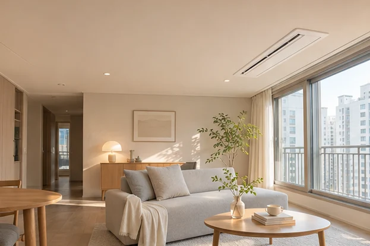

홍보
콘텐츠 제작과 정기 게시
현장 사진으로 쇼츠와 인스타그램 게시물을 제작합니다. 네이버 블로그는 브라우저 등록을 자동화해 글 입력, 사진 첨부, 카테고리 선택과 예약 발행을 처리하고 게시 주소를 현장 기록에 남깁니다.
채널별 시안 보기거니공조를 위한 제작 제안
작업팀이 보낸 사진으로 시공사례를 알리고, 그 사례를 본 고객의 견적 문의를 담당자에게 연결하는 홈페이지와 운영 솔루션을 제안합니다.

업무 흐름 시연
가상 현장과 예시 고객으로 체험합니다. 게시와 발송은 이 화면에서 시뮬레이션합니다.
제작 범위
거니공조가 필요한 계정과 운영 권한을 보유한 조건으로 설계합니다.
홍보
현장 사진으로 쇼츠와 인스타그램 게시물을 제작합니다. 네이버 블로그는 브라우저 등록을 자동화해 글 입력, 사진 첨부, 카테고리 선택과 예약 발행을 처리하고 게시 주소를 현장 기록에 남깁니다.
채널별 시안 보기영업
지역과 설치 조건을 읽어 예상 금액, 기본 구성, 추가 질문을 작성합니다. 숨고는 발송 예산과 조건을 적용하고, 크몽은 반복 질문과 개별 견적 메시지를 처리합니다.
플랫폼 견적 시연고객 관리
고객이 선택한 구성과 희망 일정을 상담 카드에 담습니다. 접수 안내, 담당자 배정, 다음 연락일을 연결해 미응답 건과 방문 일정을 한눈에 확인합니다.
상담 카드 보기현장 기록
작업팀이 카카오톡에서 현장을 고르고 사진을 보내면 공정별 앨범으로 정리합니다. 원본은 상담과 A/S를 위해 보관하고, 승인된 편집본은 시공사례와 홍보에 활용합니다.
사진 앨범 열기첫 도입 협의